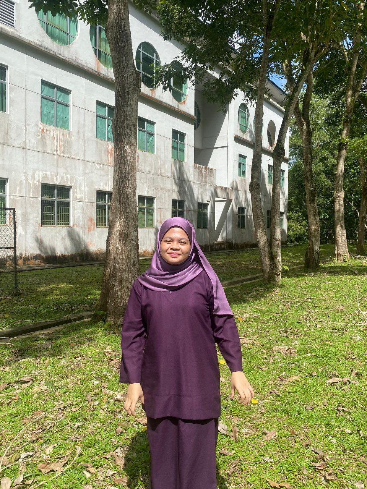
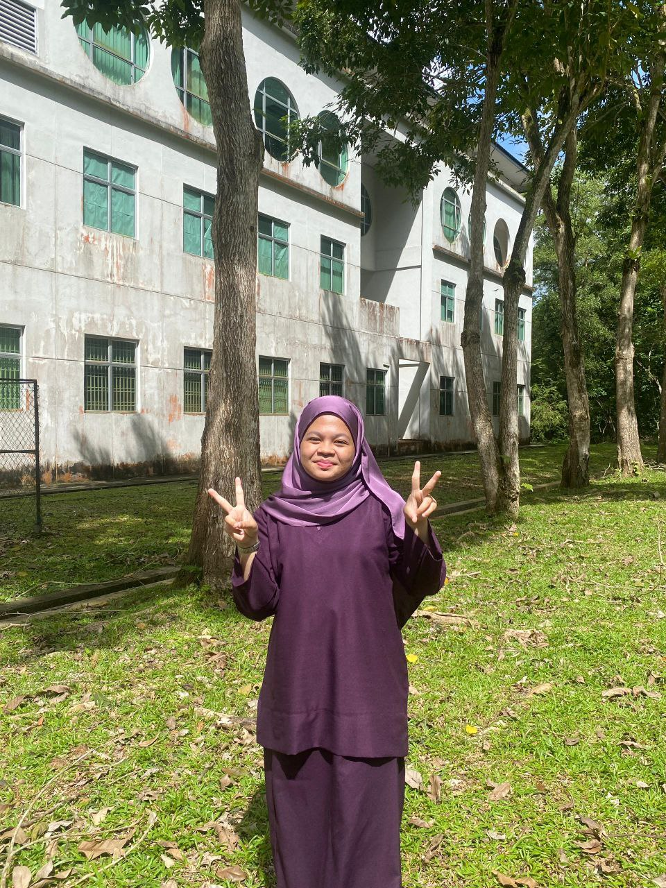

Background
Studies
UNIVERSITI TEKNOLOGI MALAYSIA | 2024-now
A student taking Bachelor of Computer Science (Data Engineering) with Honours
KOLEJ MATRIKULASI JOHOR | 2023-2024
A student taking course of Physical Science and graduated with CGPA 4.0
MRSM BATU PAHAT | 2018-2023
Graduated with CGPA 3.83 , received first class graduate
Sijil Pelajaran Malaysia 2024 | 5A+ 3A 1C+
International General Certificate of Secondary Education (IGCSE) 2022 | 1A* 3A 2C
SKILLS
1. Project Management
2. Programming Skills (C++,Python,Java,HTML)
3. Creative & Design (Poster,Slide)
4. Leadership
5.
Motto
"It is a truth universally acknowledged, that a single tech idea in possession of great potential, must be in want of innovation."
Achievements
As a first-year Bachelor of Computer Science (Data Engineering) student at Universiti Teknologi Malaysia, I have actively pursued opportunities to grow both academically and personally. By tackling challenging courses like Discrete Structure, Digital Logic, and Programming Techniques, I have sharpened my analytical, technical, and programming abilities. My experience as a first-time tutor has further enhanced my communication and mentoring skills, boosting my confidence and fostering leadership qualities. Additionally, my preparation for AIESEC interviews highlights my dedication to extracurricular involvement and continuous personal growth.
In addition to my academic pursuits, I actively engage in various co-curricular activities and competitions. I am a proud member of PAL Leader, BADAR, and JAPPIM, where I have developed teamwork and organizational skills. My participation in innovation competitions such as HIKMJ 2023, Kie-61, and the bridge-building competition has fueled my creativity and problem-solving abilities. Moreover, I have challenged myself academically through events like Kangaroo Math and Kuiz Kimia Kebangsaan, further honing my analytical thinking and subject-specific expertise. These experiences, combined with my growing proficiency in programming, logical reasoning, and communication, reflect my well-rounded skill set and passion for continuous improvement.
About SECPH
The programme is conducted in an industrial mode based on a 2-Semester per academic session. Generally, students are expected to undertake courses equivalent to between fourteen (14) to eighteen (18) credit hours per semester. Few courses are delivered in Work-based learning (WBL) from Year 1 until Year 3. Students will undergo 1 year industrial training with UTM industry partners in the final year of their study to gain a real-world data engineering professional experiences. Student learning and assessment for WBL courses will be facilitated by university and industry supervisors.